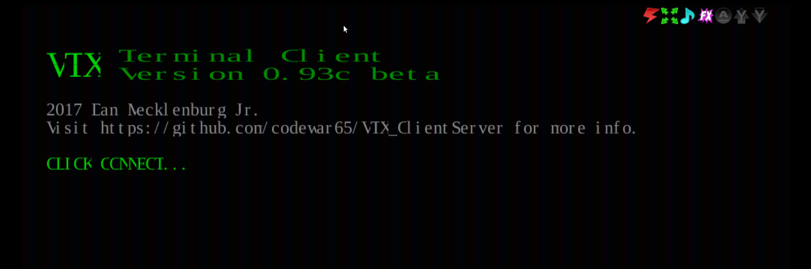

WebSocket / Web Interface Server
WebSocket Login Server
The WebSocket Login Server provides secure (wss://) as well as non-secure (ws://) WebSocket login access. This is most commonly combined with a browser-based client such as VTX or fTelnet to give users a web browser entry point to your BBS.
If you run into any trouble getting WebSocket or VTX set up, see Troubleshooting WebSocket & VTX.
Configuration
Enable the WebSocket server by adding a webSocket block to loginServers in config.hjson:
loginServers: {
webSocket: {
ws: {
// non-secure ws:// — suitable for LAN/local testing or when
// sitting behind a TLS-terminating reverse proxy (see below)
port: 8810
enabled: true
// optional: bind to a specific address (e.g. loopback when proxied)
address: 127.0.0.1
}
wss: {
// secure wss:// — ENiGMA handles TLS directly
port: 8811
enabled: true
certPem: /path/to/https_cert.pem
keyPem: /path/to/https_cert_key.pem
}
// Set proxied: true when a TLS-terminating reverse proxy (e.g. nginx)
// forwards connections to ENiGMA's plain ws:// port. ENiGMA will treat
// any connection carrying the "X-Forwarded-Proto: https" header as
// secure, which is required for 2FA/OTP and other security-sensitive
// features. Leave false (default) if ENiGMA is exposed directly.
proxied: true
}
}
Restart ENiGMA and confirm the server started in the logs:
INFO: Listening for connections (server="WebSocket (insecure)", port=8810)
INFO: Listening for connections (server="WebSocket (secure)", port=8811)
Deployment Architectures
There are two supported ways to expose a secure WebSocket endpoint to browser clients.
Option A — Reverse Proxy (recommended)
A reverse proxy such as nginx or Caddy handles TLS and forwards plain ws:// traffic to ENiGMA. This is the most common setup because it reuses your existing web certificate and keeps ENiGMA out of the certificate-management business.
Browser (wss://) → nginx (TLS termination) → ENiGMA ws:// port 8810
ENiGMA config:
loginServers: {
webSocket: {
ws: {
port: 8810
enabled: true
address: 127.0.0.1 // loopback only — nginx is the public face
}
proxied: true // trust X-Forwarded-Proto from the proxy
}
}
nginx location block (inside your existing server { ... } block with a valid TLS certificate):
location /wss {
proxy_pass http://127.0.0.1:8810;
proxy_http_version 1.1;
proxy_set_header Upgrade $http_upgrade;
proxy_set_header Connection "Upgrade";
proxy_set_header Host $host;
proxy_set_header X-Forwarded-Proto https;
}
Point wsConnect in vtxdata.js to wss://your-hostname.here/wss.
See nginx WebSocket proxying for more detail.
Option B — ENiGMA handles TLS directly
ENiGMA listens on a dedicated wss:// port and manages the certificate itself. Useful if you don’t already run a reverse proxy.
Browser (wss://) → ENiGMA wss:// port 8811
ENiGMA config:
loginServers: {
webSocket: {
wss: {
port: 8811
enabled: true
certPem: /path/to/https_cert.pem
keyPem: /path/to/https_cert_key.pem
}
}
}
Point wsConnect in vtxdata.js to wss://your-hostname.here:8811.
Let’s Encrypt certificates are written to a privileged directory by default. If ENiGMA does not run as root (it shouldn’t), copy the cert and key to a location readable by the ENiGMA user and keep them updated when the cert renews.
VTX Web Client
ENiGMA supports the VTX WebSocket client for in-browser BBS access. Example deployments: Xibalba, fORCE9.
wss://whenever the page itself is served over HTTPS. A browser will refuse to open a plainws://connection from an HTTPS page (mixed-content policy). For any publicly accessible BBS whose VTX page is served over HTTPS, a secure WebSocket connection is required, not optional. Plainws://is only practical for local/LAN testing where the page is also served over plain HTTP.
Setup
-
Enable the WebSocket server as described above. For a public deployment use Option A or B.
-
Download VTX_ClientServer. Visit github.com/codewar65/VTX_ClientServer and download the release you intend to use. Unpack it to a temporary directory.
The vtxdata.jsconfiguration format has changed across VTX_ClientServer releases. The example below matches current releases; if you download an older or newer version and see a black screen or a browser console error, check Troubleshooting WebSocket & VTX. -
Download the example HTML file. Save vtx.html to your webserver root.
-
Create the asset directory structure:
├── assets │ └── vtx └── vtx.html -
Copy VTX client files. From the unpacked VTX_ClientServer package, copy the contents of the
wwwdirectory intoassets/vtx/. -
Create
assets/vtx/vtxdata.js:var vtxdata = { sysName: "Your Awesome BBS", wsConnect: "wss://your-hostname.here:8811", // or wss://your-hostname.here/wss for Option A term: "ansi-bbs", codePage: "CP437", fontName: "UVGA16", fontSize: "24px", crtCols: 80, crtRows: 25, crtHistory: 500, xScale: 1, initStr: "", defPageAttr: 0x1010, defCrsrAttr: ['thick', 'horizontal'], defCellAttr: 0x0007, telnet: 1, autoConnect: 0, wsProtocol: 'telnet', wsDataType: 'arraybuffer', };Update
sysNameandwsConnectfor your system. Note thatdefCrsrAttrmust be an array, not a hex value — passing a hex integer here causes a black screen. -
Navigate to
https://your-hostname.here/vtx.html. You should see a splash screen like:
Configuration Reference
| Key | Required | Description |
|---|---|---|
ws.enabled |
Enable non-secure ws:// listener. Default: false. |
|
ws.port |
Port for ws://. Default: 8810. |
|
ws.address |
Bind address for ws://. Omit to bind all interfaces. |
|
wss.enabled |
Enable secure wss:// listener. Default: false. |
|
wss.port |
Port for wss://. Default: 8811. |
|
wss.address |
Bind address for wss://. |
|
wss.certPem |
|
Path to TLS certificate in PEM format. |
wss.keyPem |
|
Path to TLS private key in PEM format. |
proxied |
Set true when behind a TLS-terminating proxy. Trusts X-Forwarded-Proto: https. Default: false. |